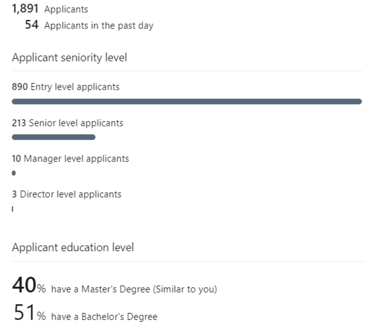

Technically, no you do not need a college degree to become a software engineer. The most difficult parts of becoming a developer is in two parts; one, getting the skills and two, getting the job.
You have to decide whether or not you want to do it professionally. Each of these is strenuous and a long task. Many people after getting skilled take a year or longer to land a software development job. The skills itself is not the lone task.
Getting a college degree speeds up both the skills process and the job hunting process but that is not the main reason to get a degree. The degree helps most with confidence.
Employers Don't Hire Based on Degree
Today it is too easy to get a college degree in Computer Science. Many schools offer under 8 courses and allow you to get a Master's in Computer Science. Many, many people get a Master's of Science and don't know how to code.
Take a look at these statistics regarding a M.S in Computer Science:
Of nearing 2,000 applications(which is typical) on a single job, 40% have a M.S in Computer Science. Of those 40% only a small portion are real coders. Typically, the ones with a bachelor's degree have better programming skills than a M.S
Often a programmer with a G.E.D or high school degree is the most skilled of them all. Employers have caught on to this and know not to take degrees into account but instead to look at the merit of the programmer.
The typical indicator of merit is job experience. Though this can be obtained through other means than work, such as open-source projects, personal projects and freelance work.
Why Is Confidence the Main Reason to Get a Degree?
Without a degree most programmers, no matter how skilled, tend to think the constant denials is because of a lack of degree. Even with a degree and skills in many cases it takes months to a year to get a good engineering job.
The degree simply gives that "I am employable" feeling and motivates the graduate not to give up.
There are, however, a few good use cases for college degrees, though it is easy enough to find a substitute.
There Are Some Technical Use Cases of College Degrees
A few fields are great for using college as a means of obtaining both the certification and skill. Going to the right college for these fields typically has a high tuition. They are professorships, machine learning & graphics programming.
Of these three becoming a professor is the only one that truly requires you to have a degree of at least a Master's of Science. The majority of professors are not, in the grand scheme of things, amazing programmers. Many times there are students in their class that are better programmers.
To become a professor you typically need a high citation count on research papers on a platform like Google scholar. In the academic world research contribution is king and not necessarily programming merit. Additionally the actual amount of learning from the degree is less important. What is most important for professorships is "getting the degree"
Machine learning has a lot of math that simply is very difficult to learn on your own. Most people require a book like A Mind For Numbers or a learning theory course on Udemy to match up to those people who simply "get math".
Self-teaching ML requires you to constantly read ML research papers to "get" the use cases for different models. College forces you to learn the math and teaches you how to properly read the research papers in a group environment, specifically for that field.
If you go the college route, getting into a good school for this is more of a requirement, making this a high tuition field. Otherwise, if going self-taught, you can opt for taking data science online courses on subscription like https://www.dataquest.io/.
Either way ML and graphics programming requires you to love the field to truly have the persistence to succeed.
Graphics programming has the same requirements as ML when it comes to schooling. For most people it needs to be taught to them, especially the mathematics. However, it is possible to self-teach so long as you love the field and commit to it.
Anywho, I hope you learned something…
Happy coding!
Resources
College degree statistics: https://www.census.gov/newsroom/press-releases/2022/educational-attainment.html